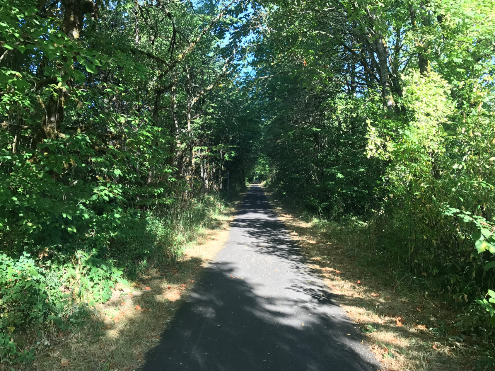
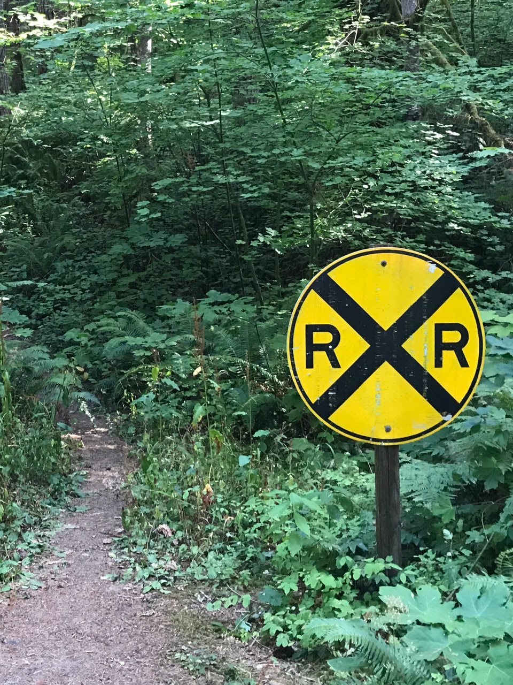
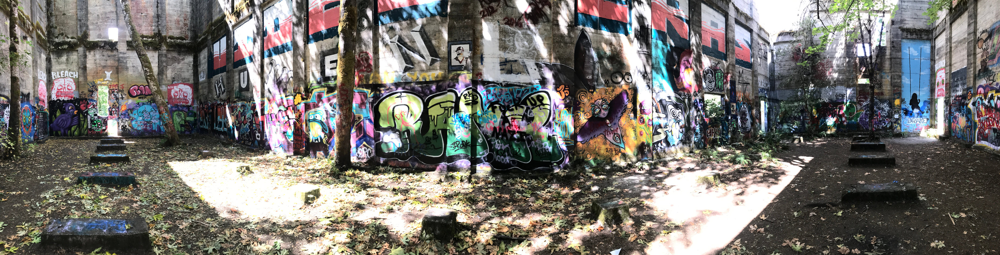

Sometime last night, the house dog of this Airbnb lost all control of its bowels — on both floors. I woke up early to screaming and opened my door a crack. I could see across the hall, into the bathroom, an artful splatter up and down the shower walls. So while everyone else flailed in disgusted panic, I hastily got dressed, threw my toothbrush and some granola bars into my pack, and bolted.
The trail is a good ways west of Portland, and the long Lyft drive gave me many opportunities to wonder at the countryside and spark conversation with the driver. For the former, gently rolling farmland bordered by mountains at the horizons; for the latter, agreement that the new Taylor Swift song is “pretty pretty bad.” She dropped me off at the southern trailhead in Banks and headed back to the city. I took advantage of the facilities to brush my teeth and fill my water pack before setting off.
This is Oregon’s first rails-to-trail, uh, trail, handed over to the state parks department in 1990. For the first mile or so north out of Banks, a sibling railroad track runs parallel. Other than that, there’s relatively little to observe, especially compared to the Willamette River Loop that’s always passing through towns and cities. Here, instead, it’s either a paved trail through forest, branches drooping over you and making the occasional crude arch, or paved trail through open farmland. It’s very quiet too. I almost felt guilty at how much noise my rattling skateboard was creating.
The majority of the first half was at a very slight uphill, enough to make me question whether I was still tired from two days ago. The asphalt was smooth in places and coarse in others, though needles dropped from the trees had been kind of worn into the cracks by constant cycling, smoothing out the coarse bits. It never felt overwhelming, and nevertheless I stopped at the optimistically-named Tophill trailhead for a breather. I also took the chance to tighten the hardware on my board in the hopes it would reduce the rattling. It didn’t, but I sure felt like a real handyman for a minute.
Most of the other people I saw were on their bicycles, either zooming past me in the other direction or passing me from behind. One of the few joggers I passed was out with her dog, who became very scared upon my approach. “A skateboard is the only thing he hasn’t seen on this trail!” Score another bewilderment point for me.
After the initial few miles of parallel active railroad track, there wasn’t much indication that the trail itself used to be a railway. The few reminders that survived were particularly noteable. One was a nice, long trestle bridge elevated way above the valley. Its floor surface was new pavement, obviously, but the sides looked like the original wood. And then a random railroad crossing sign, far away from any road. Maybe put in after the fact, as a joke.
At around the halfway point of the trail, a series of severe switchbacks brought me down to a road crossing and back up from it. I had to walk both of these, again for fear of faceplanting and getting tired, respectively. And then it was smooth sailing the rest of the way, likely from a similarly subtle downhill. Judging from distance markers, I was able to coast over one and a half miles without having to kick for more speed or drag a foot to slow down. It was the dessert after dinner, paycheck after work, reaping what I’d sowed.
The trail ends after some 21 miles in Vernonia, with a quick little loop around Vernonia Lake. As would be later confirmed by a local, Vernonia Lake is more of a pond, or even a puddle. It’s the spot where the Oregon-American Lumber Company set up shop, as little placards around the perimeter will tell you. But for the ultimate end to my day, I hopped off the loop and explored the abandoned saw mill. A huge structure reduced to its four walls: completely gutted on the inside with only a tiny section of roof remaining. Full-grown trees have taken root inside and are now sprouting out the top. And Oregon’s finest street artists have decorated all throughout the interior. It feels like a house of worship, for some religion crossed between nature devotees and rebellious taggers. Stepping inside, no joke, took my breath away.
My phone died shortly after taking a bunch of photos and video, and I was suddenly left on my own to find my way back to civilization. It’s not like Lyft operated that far outside Portland anyway. Mostly out of curiosity, I called the closest Yellow Cab dispatch to see if they would pick me up in Vernonia, and they replied a curt “No.”
So my only option (short of hitchhiking) was Vernonia’s public transportation: a minivan that departs from city hall for Beaverton twice every Monday, Wednesday, and Friday. I’d missed the first departure at 6:30am, and would have to kill a couple hours until the second at 4:30pm the old-fashioned way — sans phone. First, I walked to the little public library and sampled their selection of magazines from a year ago. Next, I walked up and down the three-block town, observing what were mostly bars and antique/novelty shops. At the east end, there’s a small city park along the river, with a small shallow pool carved out of the bank. A lone teenaged lifeguard sat watch over the empty pool and I felt very sorry for her.
When the time came to leave, I was (surprise!) the only passenger in the minivan. We talked about the history of Vernonia and the pros and cons of these public access trails on our slow drive east. Two eager passengers took my place in the minivan for its final Friday trip home, and I boarded the blue metro line for most of the way back, covering the final miles again by skateboard. What cost just under $50 via Lyft was only $8.50 via public transportation, which seems appropriate for this whole skateboarding on bike trails thing.